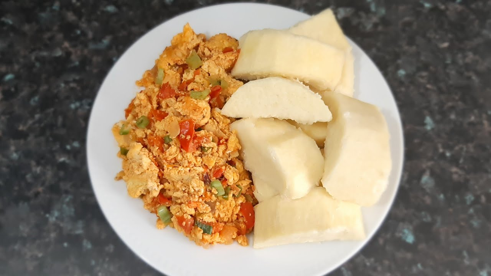

Yam and Eggs
Preparation Time:30 minutes
Ingredients:
- 1 large yam, peeled and cut into cubesd
- 4 eggs
- 1 onion, chopped
- 2 tomatoes, chopped
- 1 bell pepper (any color), chopped
- 2 tablespoons vegetable oil
- 1 teaspoon ground cayenne pepper
- Salt and pepper, to taste
Instructions:
- Boil the yam cubes in salted water until tender. Drain and set aside.
- In a bowl, beat the eggs and season with salt and pepper.
- Heat vegetable oil in a skillet over medium heat. Add chopped onions and sauté until translucent.
- Add chopped tomatoes and bell pepper to the skillet. Cook until softened.
- Pour the beaten eggs into the skillet and stir continuously until they are cooked through.
- Add the boiled yam cubes to the skillet and gently mix with the egg sauce.
- Season with ground cayenne pepper, salt, and pepper to taste. Cook for another 2-3 minutes until heated through.
- Remove from heat and serve the yam and egg sauce hot as a satisfying and nutritious meal.
Fun Fact: Yam and egg sauce is a popular Nigerian dish enjoyed as a breakfast or brunch option. It combines the starchy goodness of boiled yam with flavorful and protein-rich egg sauce. This dish is simple to prepare and versatile, allowing for various additions and seasonings to suit individual tastes.